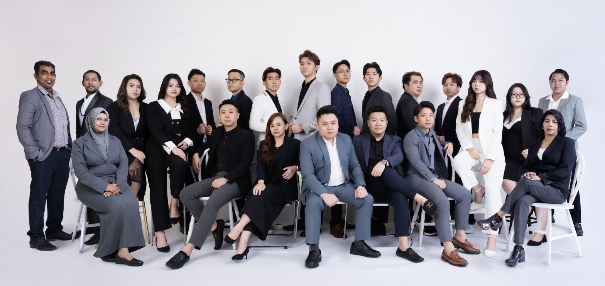

从上班族到自由工作者，专业形象照能为不同身份的你带来实际帮助。From working professionals to freelancers, a professional headshot can genuinely help — whoever you are.

无论你是哪一种身份，一张专业的形象照都是别人认识你的第一印象。投资一次专业拍摄，能长期用在履历、社交平台与官方资料上，性价比其实很高。Whatever your role, a professional headshot is often the first impression people form of you. One good session pays off across your resume, social profiles, and official materials for a long time.
立即预约你的形象照拍摄，为自己留下最有自信的一面。Book your headshot session today and capture your most confident self.